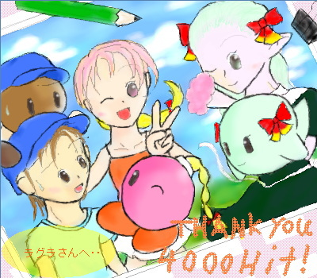

ＴＨＡＮＫ ＹＯＵ ４０００ＨＩＴ！ ラグラ様へ
|  |
「これからもずーっと、仲間でいられますように♪」
ラグラ様からのリクエストは、
「管理人が、マリストで好きなキャラ２〜３人」でした。
というわけで、マリストよりクリオ、ピンキー、レサレサです。
管理人の趣味で擬人化も＋（笑。
管理人はこの３人が大っ好きで、いつも後ろにはこの人たち（特にクリオ）がついてきていました。
・・え、その一番好きだというクリオがハイテンションな女の子２人に囲まれて困ってるじゃないかって？
･･いいんです、多分冒険の間もこんな感じだったでしょうからｖ
ところでこの作品、なにがいけなかったのか、
元々は２００ＫＢを越す大作になってしまっていましたorz
そのせいで投稿に失敗し、泣く泣くペイントでスクリーンキャプチャしたものです。（すいません本当･･；
･･という訳で、上の絵も８０ＫＢ超えちゃってますorz
「重くて表示できんわバカ野郎！」･･という方がおりましたら、管理人まで･･；
これをさらに縮小した、４０ＫＢ程度の絵がこちらです。
毎回毎回こんな事をしている気がするので、アニメ塗りでも練習してやろうかなんて呟いてみます。
大好きなキャラを描くのって、本当に楽しいです･･ｖ
それではラグラ様、リクエストありがとうございました！
ラグラ様のみ、保存、転載可能です。
･･･って㊥あ゛ーっ！？
･･･今更、サインを入れ忘れたのに気づきました（どーん。
絵版絵じゃないからもはや修正も叶わない･･嗚呼。本当にすいません･･；